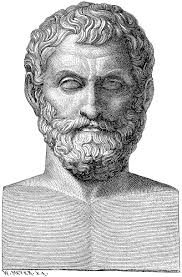
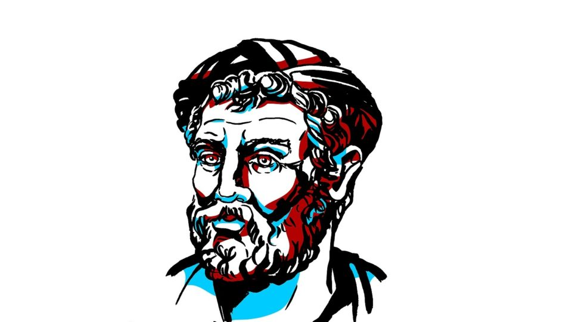

Ela surge da necessidade de explicar o mundo de um novo modo. Os filósofos buscam encontrar respostas racionais para a origem das coisas, dos fenômenos da natureza, da existência e da racionalidade humana.
O termo filosofia é de origem grega e significa “amor ao saber”, ou seja, a busca pela sabedoria.
De tal modo que, durante a transição do pensamento mítico para o racional, os filósofos acreditavam conseguir transmitir a mensagem dos deuses. Os deuses e as entidades mitológicas serviam de inspiração para a filosofia nascente.
Por esse motivo, no início, a filosofia estava intimamente relacionada com a religião: mitos, crenças, etc. Assim, o pensamento mítico foi dando lugar ao pensamento racional, ou ainda, do mito ao logos.
>
Filósofos que iniciaram a filosofia:
Tales de Mileto:

"Tales de Mileto é considerado o primeiro filósofo da tradição ocidental. Assim como os outros pensadores do período pré-socrático, Tales buscava compreender qual é verdadeira origem do Universo, refutando a mitologia grega, que apresentava narrativas originárias que explicavam de maneira fantasiosa o modo como o Universo tinha sido formado." Saiba mais sobre Tales de Mileto
Anaximandro de Mileto

"Anaximandro nasceu na cidade de Mileto, região da Jônia (atual Turquia), uma porção de terras pertencida ao território da Ásia Menor, aproximadamente no ano de 610 a.C. O filósofo, astrônomo e geógrafo grego conheceu Tales, considerado o primeiro filósofo grego, quem influenciou o seu pensamento. Anaximandro continuou a busca pela origem do Universo (cosmologia) de Tales, em contraposição às doutrinas mitológicas, que explicavam o surgimento de tudo de maneira fantasiosa."
Saiba mais sobre Anaximandro de Mileto